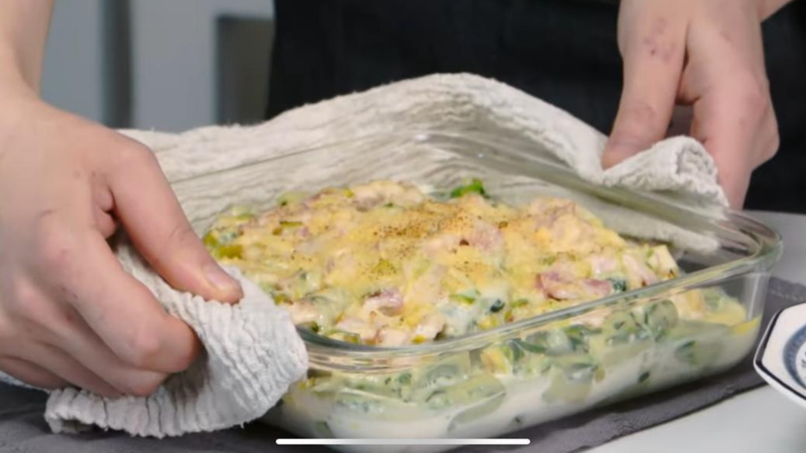
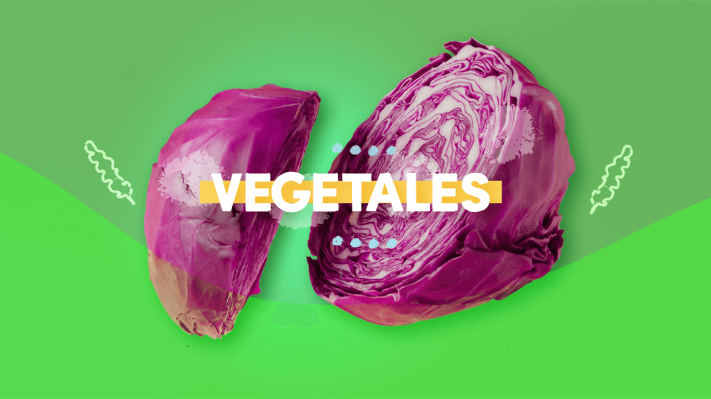
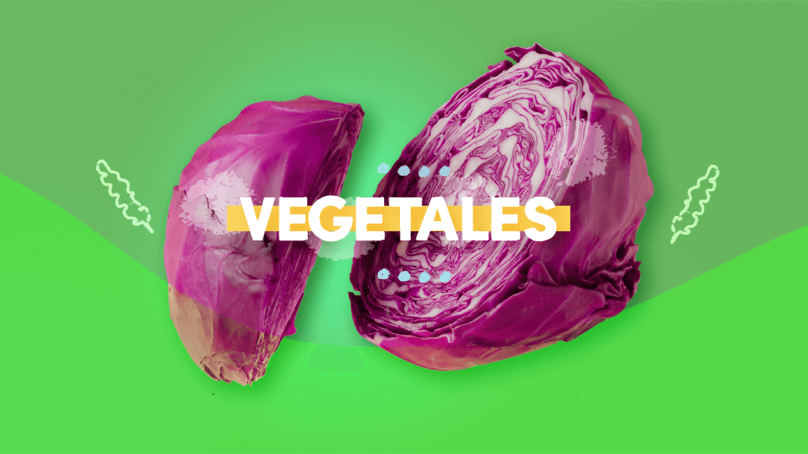

Ñoquis de espinaca soufflé

Ingredientes
- 100 g de manteca.
- ½ l de leche.
- 250 g de harina 0000.
- Un huevo.
- Espinaca fresca, ½ paquete.
- Sal, pimienta y nuez moscada.
Para la salsa
- 250 cc de crema de leche.
- 100 g de queso rallado.
- 100 g de panceta.
- 20 g de puerros.
- Un diente de ajo.
- Sal y pimienta, a gusto.
Procedimiento
- Calentar la leche junto a la manteca hasta que hierva, condimentar y agregar la espinaca fresca picada,
la harina, los huevos y mezclar muy bien.
- Debe quedar una masa bien lisa. Colocarla en una manga.
- En una sartén, dorar la panceta, agregar el puerro y el ajo y la crema de leche, salpimentar y mezclar
la mitad del queso rallado.
- En una olla con abundante agua, cocinar los ñoquis. Con ayuda de un hilo pegado a la olla o palito de
brocheta vamos a ir cortando los ñoquis que caerán al agua para cocinarse unos minutos.
- Colocar en la sartén apta para horno junto a la salsa, integrando todo muy bien.
- Terminar con el resto del queso y dorar unos minutos en el horno.


 
